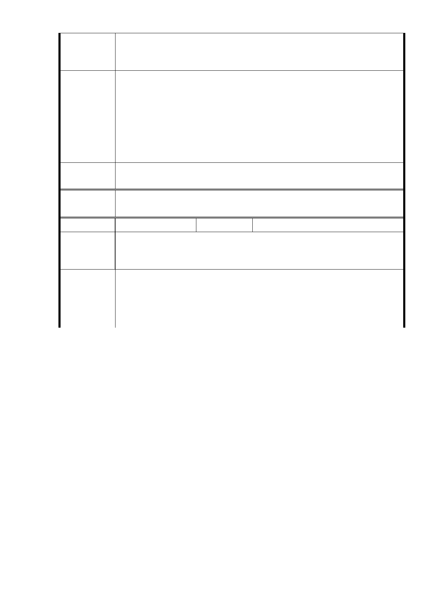

六、 總結－強置倉促的開發，只有看到市府財團笑，週邊小市
民哭的景象。等捷運開通，週邊道路拓寬，足以疏解人車
時，再來蓋大樓，才不失本末倒置。
1 .有關反對本府規劃公營出租住宅部分，同編號1 回復內容。另
為因應高齡化社會，於社會福利設施用地規劃老人照護設施，
市府回應
意見
嘉惠本市銀髮族。
2.反對社福用地容積率由210％回復至400％及交通影響部分，同
編號1回復內容。
3.有關汽車出入口及排風口設置位置，須俟後續建築規劃設計配
置時進行討論，非都市計畫階段討論事項。
專案小組
審查結論
同編號 1。
委
決
員
會
議
同編號 1。
編號
11
陳情人 李○卿
本基地四周為人口密集之單純住宅區，急需綠地紓解居民生活壓
陳 情 理 由 力，提高生活品質，不宜商業區之高樓大廈建築、商場、旅館等
之進駐。
此 6.5 公頃空地，請先全部種植樹木及草坪，除了派出所、捷運
建 議 辦 法 出入口、圖書館、公園管理室、地下停車場外，不建其他建築物
，讓居民喘一口氣。商業區請不要考慮。（有這麼一塊空地很不
容易，希望建築物越少越好，綠地越多越好，說明圖如下）
- 43 -